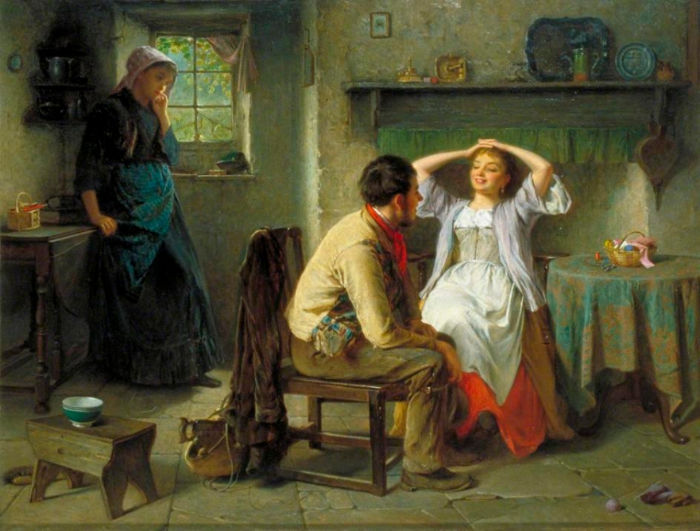

Ciúme Retroativo: Por que algumas pessoas têm ciúmes do passado romântico de seus parceiros?
Pontos chave
- O ciúme retroativo é uma resposta irracional;
- Em geral, revela uma insegurança emocional do(a) parceiro(a);
- O ciúme é uma manifestação inconsciente de posse e propriedade;
- A autorreflexão pode ser fundamental para melhorar esse comportamento.
Recentemente, enquanto assistia à série "Love is Blind" na Netflix, me deparei com um intrigante diálogo entre um casal que estava se conhecendo. Em questão de minutos, uma das pessoas começou a fazer uma série de perguntas sobre o passado de seu pretendente...
... [trecho reduzido para visualização — inserir aqui o conteúdo completo do artigo conforme fornecido acima] ...
Conclusão
Não há dúvidas de que o ciúme retroativo pode causar danos significativos a um relacionamento atual. Os sentimentos de posse ou o temor da perda, juntamente com o medo da rejeição, são os principais fatores que desencadeiam essa emoção...
- Examinar Suas Emoções - O autoconhecimento é fundamental para manter um relacionamento saudável consigo mesmo e com o outro.
- Resistir à Tentação de Vasculhar o Passado - Às vezes, o impulso de investigar o passado pode proporcionar uma falsa sensação de alívio.
- Compreender que Não Possuímos o Outro - O outro não é nossa propriedade, mas um ser humano livre que escolheu estar ao nosso lado.
- Reconhecer e Comunicar-se Abertamente - Compartilhar seus sentimentos com seu parceiro pode melhorar a conexão e compreensão mútua.